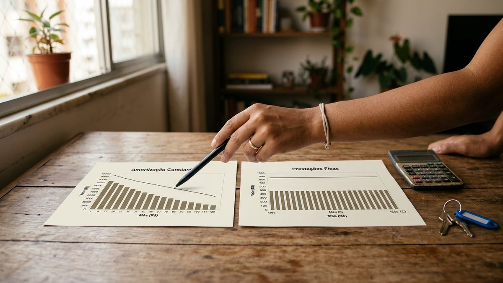

A taxa de juros é a mesma, o valor financiado é o mesmo, e ainda assim a primeira parcela pode mudar em quase mil reais. A diferença está no sistema de amortização, que define em que ritmo você devolve o dinheiro emprestado.
Como cada tabela funciona
Toda parcela tem duas partes: a amortização, que abate a dívida, e os juros, calculados sobre o saldo que ainda falta pagar.
- SAC (Sistema de Amortização Constante): a amortização é igual todo mês. Como o saldo cai rápido, os juros diminuem e a parcela vai ficando menor ao longo do contrato.
- Price: a parcela é que fica igual do começo ao fim, antes da correção e dos seguros. No início ela é quase toda feita de juros, e a amortização só ganha peso na segunda metade do prazo.
Um exemplo com números
Financiamento de R$ 400.000 em 30 anos, com juros de 10% ao ano, sem contar seguros nem correção monetária:
| SAC | Price | |
|---|---|---|
| Primeira parcela | R$ 4.301 | R$ 3.384 |
| Última parcela | R$ 1.120 | R$ 3.384 |
| Total de juros | cerca de R$ 576 mil | cerca de R$ 818 mil |
A Price começa cerca de R$ 900 mais barata por mês, mas custa em torno de R$ 240 mil a mais em juros até o fim. Na SAC, a parcela passa a ser menor que a da Price por volta do nono ano.
Quando a SAC faz sentido
- Sua renda comporta a parcela inicial mais alta com folga.
- Você quer pagar menos juros no total.
- Prefere ver a parcela cair com o tempo, o que ajuda se a renda diminuir na aposentadoria.
Quando a Price faz sentido
- A parcela inicial da SAC não cabe nos cerca de 30% da renda que os bancos aceitam.
- Você precisa de previsibilidade no orçamento dos primeiros anos.
- Pretende amortizar por conta própria sempre que sobrar dinheiro, o que reduz boa parte da diferença de juros.
Atenção à correção: em contratos corrigidos pela TR ou pelo IPCA, o saldo devedor é atualizado todo mês. Na Price, em que o saldo demora a cair, a correção pesa por mais tempo e a parcela "fixa" pode subir.
O que pesa mais na decisão
Escolha primeiro pela parcela que cabe no seu bolso sem aperto, e só depois pelo total de juros. Um financiamento mais barato no papel não ajuda se a parcela inicial comprometer o orçamento. Nem todo banco oferece as duas tabelas em todas as linhas, então vale confirmar antes de pedir a proposta.
Veja também TR, IPCA ou taxa fixa: qual correção escolher e como amortizar o financiamento.
Simule o seu valor nas duas tabelas e veja a parcela em cada banco.
Comparar bancos